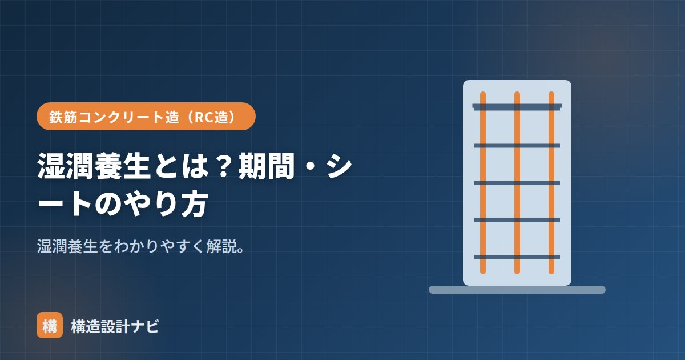

湿潤養生とは？期間・シートのやり方

湿潤養生（しつじゅんようじょう）とは、コンクリートの表面を湿った状態に保ち、乾燥を防ぐ養生方法のことです。養生の中心となる方法で、打込み後のコンクリートが十分な強度・耐久性を発揮できるかどうかは、この養生の良し悪しに大きく左右されます。
- 湿潤養生は水分を保って水和反応を進め、強度・耐久性を確保する養生方法。
- 期間はセメントの種類によって異なり、早強3日・普通5日・高炉B等7日以上が目安。
- 散水・湛水・養生シート・膜養生剤などの方法があり、初期の管理が特に重要。
なぜ湿潤養生が必要か
コンクリートは水分があるほど水和反応が進み、強度が伸びます。表面が早く乾くと、反応が止まって強度・耐久性が下がり、乾燥収縮ひび割れも生じます。湿潤養生はこれを防ぎます（→水セメント比とは別に、外から乾かさないことが大切）。水和反応は打込み直後から急激に進み、その後徐々に緩やかになっていきますが、反応を進めるための水分が表面から失われると、その時点で強度の伸びがほぼ止まってしまいます。
ひび割れとの関係
湿潤養生が不十分だと、大きく2種類のひび割れリスクが高まります。1つは、まだ固まりきっていない打込み直後のコンクリート表面が急速に乾燥し、収縮に耐えられず生じるプラスティック収縮ひび割れです。もう1つは、硬化後も内部と表面の水分の逃げ方に差が生じることによる乾燥収縮ひび割れです。どちらも、表面を湿らせて水分の急激な逸散を防ぐ湿潤養生によって、発生を抑えることができます。
期間
湿潤養生を続ける期間は、セメントの種類と気温で決まります（目安）。
| セメント | 湿潤養生の日数（目安） |
|---|---|
| 早強ポルトランド | 3日以上 |
| 普通ポルトランド | 5日以上 |
| 高炉B・中庸熱・フライアッシュB | 7日以上 |
シートなどのやり方
- 散水・湛水：表面に水をまく・水をためる。
- 養生シート：ポリエチレンフィルムや養生マットで覆い、水分の蒸発を防ぐ。湿らせた状態で密着させる。
- 膜養生剤：表面に膜をつくる薬剤を散布し、水分の逸散を抑える。
特に打込み後の初期（数日）が重要です。直射日光・風で乾きやすい夏（暑中）は、早めに・こまめに湿潤養生します。
現場で「養生シートを掛けたから大丈夫」と報告を受けても、めくってみると打込み当日のうちにシートがずれて表面が乾いている例が少なくありません。私は特に真夏の躯体工事では、初日・翌日の散水記録を写真付きで残してもらうよう工事監理の段階から念押ししています。
養生の有無で強度はどれだけ変わるか
湿潤養生の効果は、強度の伸び方を比べると一目でわかります。水分が保たれている間はセメントの水和反応が進み続けますが、乾いてしまうと反応が止まり、その時点の強度でほぼ頭打ちになります。
この差は表面付近でとくに顕著に現れます。表層はかぶりコンクリートとして鉄筋を保護する役割を持つため、ここが乾燥で脆くなると、中性化や塩害の進行が早まり、建物の耐久性そのものが低下します。強度試験では供試体（テストピース）が標準養生されているため良好な値が出ていても、実際の躯体表面が乾いていれば意味がない、という点に注意が必要です。
季節ごとの注意点
| 時期 | リスク | 対応 |
|---|---|---|
| 夏（暑中） | 直射日光と風で急速に乾燥。打込み当日に表面がひび割れる | 打込み直後から散水・シート養生。日中の作業では仕上げ直後の乾燥に特に注意 |
| 冬（寒中） | 低温で水和反応が遅く、強度の伸びが鈍い。凍結の危険 | 養生期間を延長。初期凍害を防ぐため保温養生（シート・ジェットヒーター）を併用 |
| 梅雨・春秋 | 比較的良好だが、風の強い日は乾燥が進む | 湿度が高くても風があれば乾く。風速にも注意する |
とくに冬期は、湿潤養生と保温養生を混同しないことが大切です。湿潤養生は「乾かさない」ための管理、保温養生は「凍らせない・温度を確保する」ための管理で、目的が異なります。寒中コンクリートでは両方を同時に行う必要があります。
よくある質問
Q1. 養生シートを掛けるだけで湿潤養生になりますか？
シートを掛けるだけでは不十分な場合があります。シートは水分の蒸発を抑えるためのものなので、コンクリート表面が湿っている状態で密着させることが前提です。乾いた面に掛けても水分は戻りません。またシートがめくれて隙間ができると、そこから急速に乾燥します。散水と組み合わせ、シートがずれていないか日々確認することが必要です。
Q2. 湿潤養生の期間は、型枠が付いていれば型枠期間に含められますか？
せき板が接している面は、型枠が水分の逸散を防ぐため湿潤養生として扱えるのが一般的です。ただし木製型枠は自身が水を吸うため、長期になると乾燥の原因になることもあります。一方、スラブ上面など型枠のない打ち放し面は、打込み直後から別途養生が必要です。型枠を早期に取り外す場合は、脱型後の養生方法をあらかじめ決めておきます。
Q3. 膜養生剤を使えば散水は不要ですか？
膜養生剤は表面に被膜をつくって水分の蒸発を抑えるもので、散水が難しい部位や大面積の床などで有効です。ただし被膜が均一に形成されないと効果にムラが出ますし、後から仕上げ材を施工する面では付着不良の原因になることがあります。仕上げの有無や部位に応じて、散水・シート養生と使い分けます。
まとめ
- 湿潤養生は表面を湿らせ乾燥を防ぐ養生。水和を進め強度・耐久性を確保する。
- 期間は早強3日・普通5日・高炉/中庸熱7日以上が目安。
- 散水・養生シート・膜養生剤などで行う。初期が特に重要。